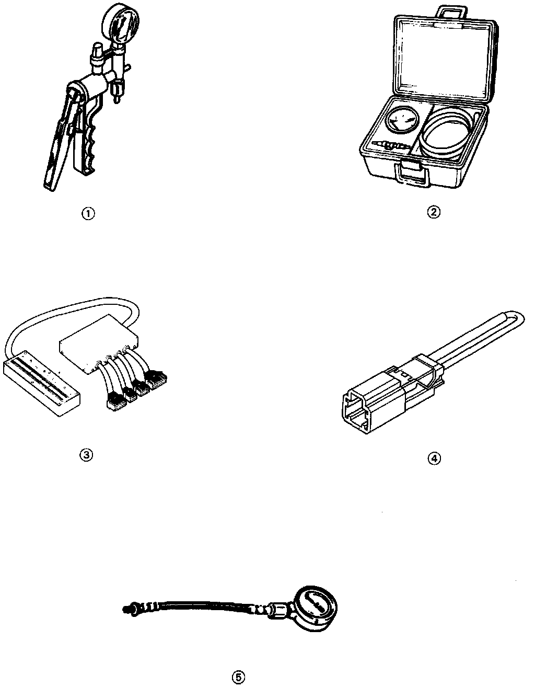

Powertrain Management: Tools and Equipment
Special Tools:

Reference # Part # Description
1 A973X-041-XXXXX Vacuum Pump/Gauge
2 07JAZ-001000B Vacuum/Pressure Gauge
3 07LAJ-PT3010A Test Harness
4 07PAZ-0010100 SCS Service Connector
5 07406-0040001 Fuel Pressure Gauge